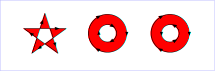
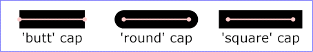

SVG2 Requirement: Control the order of painting and filling and markers
Resolution: SVG2 will adopt the "paint-order" property proposal, though possibly with a different name.
Purpose: To address the common desire to paint strokes below fills without having to duplicate an element
Owner: Cameron (ACTION-3285)
'path' elements, 'text' elements and basic shapes can be filled (which means painting the interior of the object) and stroked (which means painting along the outline of the object). Filling and stroking both can be thought of in more general terms as painting operations.
Certain elements (i.e., 'path', 'polyline', 'polygon' and 'line' elements) can also have marker symbols drawn at their vertices.
With SVG, you can paint (i.e., fill or stroke) with:
SVG uses the general notion of a paint server. Paint servers are specified using a IRI reference on a 'fill' or 'stroke' property. Gradients and patterns are just specific types of paint servers.
Properties 'fill' and 'stroke' take on a value of type <paint>, which is specified as follows:
| <paint>: | none | currentColor | <color> [<icccolor>] | <funciri> [ none | currentColor | <color> [<icccolor>] ] | inherit |
| Value: | <paint> (See Specifying paint) |
| Initial: | black |
| Applies to: | shapes and text content elements |
| Inherited: | yes |
| Percentages: | N/A |
| Media: | visual |
| Animatable: | yes |
The 'fill' property paints the interior of the given graphical element. The area to be painted consists of any areas inside the outline of the shape. To determine the inside of the shape, all subpaths are considered, and the interior is determined according to the rules associated with the current value of the 'fill-rule' property. The zero-width geometric outline of a shape is included in the area to be painted.
The fill operation fills open subpaths by performing the fill operation as if an additional "closepath" command were added to the path to connect the last point of the subpath with the first point of the subpath. Thus, fill operations apply to both open subpaths within 'path' elements (i.e., subpaths without a closepath command) and 'polyline' elements.
| Value: | nonzero | evenodd | inherit |
| Initial: | nonzero |
| Applies to: | shapes and text content elements |
| Inherited: | yes |
| Percentages: | N/A |
| Media: | visual |
| Animatable: | yes |
The 'fill-rule' property indicates the algorithm which is to be used to determine what parts of the canvas are included inside the shape. For a simple, non-intersecting path, it is intuitively clear what region lies "inside"; however, for a more complex path, such as a path that intersects itself or where one subpath encloses another, the interpretation of "inside" is not so obvious.
The 'fill-rule' property provides two options for how the inside of a shape is determined:

(Note: the above explanations do not specify what to do if a path segment coincides with or is tangent to the ray. Since any ray will do, one may simply choose a different ray that does not have such problem intersections.)
| Value: | <opacity-value> | inherit |
| Initial: | 1 |
| Applies to: | shapes and text content elements |
| Inherited: | yes |
| Percentages: | N/A |
| Media: | visual |
| Animatable: | yes |
'fill-opacity' specifies the opacity of the painting operation used to paint the interior the current object. (See Painting shapes and text.)
Related properties: 'stroke-opacity' and 'opacity'.
The following are the properties which affect how an element is stroked.
In all cases, all stroking properties which are affected by directionality, such as those having to do with dash patterns, must be rendered such that the stroke operation starts at the same point at which the graphics element starts. In particular, for 'path' elements, the start of the path is the first point of the initial "moveto" command.
For stroking properties such as dash patterns whose computations are dependent on progress along the outline of the graphics element, distance calculations are required to utilize the SVG user agent's standard Distance along a path algorithms.
When stroking is performed using a complex paint server, such as a gradient or a pattern, the stroke operation must be identical to the result that would have occurred if the geometric shape defined by the geometry of the current graphics element and its associated stroking properties were converted to an equivalent 'path' element and then filled using the given paint server.
| Value: | <paint> (See Specifying paint) |
| Initial: | none |
| Applies to: | shapes and text content elements |
| Inherited: | yes |
| Percentages: | N/A |
| Media: | visual |
| Animatable: | yes |
The 'stroke' property paints along the outline of the given graphical element.
A subpath (see Paths) consisting of a single moveto shall not be stroked. Any zero length subpath shall not be stroked if the 'stroke-linecap' property has a value of butt but shall be stroked if the 'stroke-linecap' property has a value of round or square, producing respectively a circle or a square centered at the given point. Examples of zero length subpaths include 'M 10,10 L 10,10', 'M 20,20 h 0', 'M 30,30 z' and 'M 40,40 c 0,0 0,0 0,0'.
SVG2 Requirement: Include non-scaling stroke.
Resolution: SVG2 will include non-scaling stroke.
Purpose: Keep diagrams readable as zoom level changes.
Owner: Chris.
Note that this could be part of more generic non-scaling features.
SVG2 Requirement: Include a way to specify stroke-position.
Resolution: SVG2 shall include a way to specify stroke-position.
Purpose: Allow stroke to be inside or outside path.
Owner: Cameron.
See proposal page: Stroke position.
SVG2 Requirement: Specify more precisely stroke dashing.
Resolution: SVG2 shall specify stroke dashing more precisely.
Purpose: Define dash starting point on basic shapes and path segments.
Owner: Cameron.
SVG2 Requirement: Allow more author control over positions of dashes. (Scaling of dashes to fit path.)
Resolution: SVG2 shall allow more author control over positions of dashes.
Purpose: Allow things like aligning dashes at rectangle corners or along paths, needed for mapping.
Owner: Cameron.
See proposal page: Stroke dash adjustment.
| Value: | <percentage> | <length> | inherit |
| Initial: | 1 |
| Applies to: | shapes and text content elements |
| Inherited: | yes |
| Percentages: | Yes |
| Media: | visual |
| Animatable: | yes |
This property specifies the width of the stroke on the current object. If a <percentage> is used, the value represents a percentage of the current viewport. (See Units.)
A zero value causes no stroke to be painted. A negative value is an error (see Error processing).
| Value: | butt | round | square | inherit |
| Initial: | butt |
| Applies to: | shapes and text content elements |
| Inherited: | yes |
| Percentages: | N/A |
| Media: | visual |
| Animatable: | yes |
'stroke-linecap' specifies the shape to be used at the end of open subpaths when they are stroked. For further details see the path implementation notes.

View this example as SVG (SVG- and CSS-enabled browsers only)
| Value: | miter | round | bevel | inherit |
| Initial: | miter |
| Applies to: | shapes and text content elements |
| Inherited: | yes |
| Percentages: | N/A |
| Media: | visual |
| Animatable: | yes |
'stroke-linejoin' specifies the shape to be used at the corners of paths or basic shapes when they are stroked. For further details see the path implementation notes.
View this example as SVG (SVG- and CSS-enabled browsers only)
| Value: | <miterlimit> | inherit |
| Initial: | 4 |
| Applies to: | shapes and text content elements |
| Inherited: | yes |
| Percentages: | N/A |
| Media: | visual |
| Animatable: | yes |
When two line segments meet at a sharp angle and miter joins have been specified for 'stroke-linejoin', it is possible for the miter to extend far beyond the thickness of the line stroking the path. The 'stroke-miterlimit' imposes a limit on the ratio of the miter length to the 'stroke-width'. When the limit is exceeded, the join is converted from a miter to a bevel.
The ratio of miter length (distance between the outer tip and the inner corner of the miter) to 'stroke-width' is directly related to the angle (theta) between the segments in user space by the formula:
miterLength / stroke-width = 1 / sin ( theta / 2 )
For example, a miter limit of 1.414 converts miters to bevels for theta less than 90 degrees, a limit of 4.0 converts them for theta less than approximately 29 degrees, and a limit of 10.0 converts them for theta less than approximately 11.5 degrees.
| Value: | none | <dasharray> | inherit |
| Initial: | none |
| Applies to: | shapes and text content elements |
| Inherited: | yes |
| Percentages: | yes (see below) |
| Media: | visual |
| Animatable: | yes (non-additive) |
'stroke-dasharray' controls the pattern of dashes and gaps used to stroke paths. <dasharray> contains a list of comma and/or white space separated <length>s and <percentage>s that specify the lengths of alternating dashes and gaps. If an odd number of values is provided, then the list of values is repeated to yield an even number of values. Thus, stroke-dasharray: 5,3,2 is equivalent to stroke-dasharray: 5,3,2,5,3,2.
A list of comma and/or white space separated <length>s (which can have a unit identifier) and <percentage>s. A percentage represents a distance as a percentage of the current viewport (see Units). A negative value is an error (see Error processing). If the sum of the values is zero, then the stroke is rendered as if a value of none were specified. For further details see the path implementation notes.
The grammar for <dasharray> is as follows:
dasharray ::= (length | percentage) (comma-wsp dasharray)?
| Value: | <percentage> | <length> | inherit |
| Initial: | 0 |
| Applies to: | shapes and text content elements |
| Inherited: | yes |
| Percentages: | see prose |
| Media: | visual |
| Animatable: | yes |
'stroke-dashoffset' specifies the distance into the dash pattern to start the dash.
If a <percentage> is used, the value represents a percentage of the current viewport (see Units).
Values can be negative.
| Value: | <opacity-value> | inherit |
| Initial: | 1 |
| Applies to: | shapes and text content elements |
| Inherited: | yes |
| Percentages: | N/A |
| Media: | visual |
| Animatable: | yes |
'stroke-opacity' specifies the opacity of the painting operation used to stroke the current object. (See Painting shapes and text.)
Related properties: 'fill-opacity' and 'opacity'.
SVG2 Requirement: Have the vector-effect property
Resolution: SVG 2 will have the vector-effect property
SVG Working Group Teleconference 02 Feb 2012.
Purpose: To get stroke that doesn't scale when element is transformed.
Owner: Erik
SVG uses two properties, 'display' and 'visibility', to control the visibility of graphical elements or (in the case of the 'display' property) container elements.
The differences between the two properties are as follows:
| Value: | inline | block | list-item | run-in | compact | marker | table | inline-table | table-row-group | table-header-group | table-footer-group | table-row | table-column-group | table-column | table-cell | table-caption | none | inherit |
| Initial: | inline |
| Applies to: | 'svg', 'g', 'switch', 'a', 'foreignObject', graphics elements (including the 'text' element) and text sub-elements (i.e., 'tspan', 'tref', 'altGlyph', 'textPath') |
| Inherited: | no |
| Percentages: | N/A |
| Media: | all |
| Animatable: | yes |
A value of display: none indicates that the given element and its children shall not be rendered directly (i.e., those elements are not present in the rendering tree). Any value other than none or inherit indicates that the given element shall be rendered by the SVG user agent.
The 'display' property only affects the direct rendering of a given element, whereas it does not prevent elements from being referenced by other elements. For example, setting display: none on a 'path' element will prevent that element from getting rendered directly onto the canvas, but the 'path' element can still be referenced by a 'textPath' element; furthermore, its geometry will be used in text-on-a-path processing even if the 'path' has display: none.
The 'display' property affects direct rendering into offscreen canvases also, such as occurs with the implementation model for masks. Thus, setting display: none on a child of a 'mask element' will prevent the given child element from being rendered as part of the mask. Similarly, setting display: none on a child of a 'clipPath element' element will prevent the given child element from contributing to the clipping path.
Elements with display: none do not take up space in text layout operations, do not receive events, and do not contribute to bounding box and clipping paths calculations.
Except for any additional information provided in this specification, the normative definition of the 'display' property is the CSS2 definition ([CSS2], section 9.2.6).
| Value: | visible | hidden | collapse | inherit |
| Initial: | visible |
| Applies to: | graphics elements (including the 'text' element) and text sub-elements (i.e., 'tspan', 'tref', 'altGlyph', 'textPath' and 'a') |
| Inherited: | yes |
| Percentages: | N/A |
| Media: | visual |
| Animatable: | yes |
Note that if the 'visibility' property is set to hidden on a 'tspan', 'tref' or 'altGlyph' element, then the text is invisible but still takes up space in text layout calculations.
Depending on the value of property 'pointer-events', graphics elements which have their 'visibility' property set to hidden still might receive events.
Except for any additional information provided in this specification, the normative definition of the 'visibility' property is the CSS2 definition ([CSS2], section 11.2).
SVG2 Requirement: Improve markers
Resolution: We will improve markers for SVG2
Purpose: To solve the common problems authors have with SVG markers
Owner: Cameron (ACTION-3286)
A marker is a symbol which is attached to one or more vertices of 'path', 'line', 'polyline' and 'polygon' elements. Typically, markers are used to make arrowheads or polymarkers. Arrowheads can be defined by attaching a marker to the start or end vertices of 'path', 'line' or 'polyline' elements. Polymarkers can be defined by attaching a marker to all vertices of a 'path', 'line', 'polyline' or 'polygon' element.
The graphics for a marker are defined by a 'marker element' element. To indicate that a particular 'marker element' element should be rendered at the vertices of a particular 'path', 'line', 'polyline' or 'polygon' element, set one or more marker properties ('marker property', 'marker-start', 'marker-mid' or 'marker-end') to reference the given 'marker element' element.
Example Marker draws a triangular marker symbol as an arrowhead at the end of a path.
Markers can be animated. The animated effects will show on all current uses of the markers within the document.
The 'marker element' element defines the graphics that is to be used for drawing arrowheads or polymarkers on a given 'path', 'line', 'polyline' or 'polygon' element.
Attribute definitions:
Markers are drawn such that their reference point (i.e., attributes 'refX' and 'refY') is positioned at the given vertex. In other words, a translation transformation is constructed by the user agent to achieve the effect of having point ('refX' and 'refY') within the marker content's coordinate system (after any transformations due to the 'viewBox' and 'preserveAspectRatio' attributes) align exactly with the given vertex.
SVG's user agent style sheet sets the 'overflow' property for 'marker element' elements to hidden, which causes a rectangular clipping path to be created at the bounds of the marker tile. Unless the 'overflow' property is overridden, any graphics within the marker which goes outside of the marker rectangle will be clipped.
The contents of the 'marker element' are relative to a new coordinate system. Attribute 'markerUnits' determines an initial scale factor for transforming the graphics in the marker into the user coordinate system for the referencing element. An additional set of transformations might occur if there is a 'viewBox' attribute, in which case the coordinate system for the contents of the 'marker element' will be transformed due to the processing of attributes 'viewBox' and 'preserveAspectRatio'. If there is no 'viewBox' attribute, then the assumed default value for the the 'viewBox' attribute has the origin of the viewBox coincident with the origin of the viewport and the width/height of the viewBox the same as the width/height of the viewport.
Properties inherit into the 'marker element' element from its ancestors; properties do not inherit from the element referencing the 'marker element' element.
'marker element' elements are never rendered directly; their only usage is as something that can be referenced using the 'marker property', 'marker-start', 'marker-end' and 'marker-mid' properties. The 'display' property does not apply to the 'marker element' element; thus, 'marker element' elements are not directly rendered even if the 'display' property is set to a value other than none, and 'marker element' elements are available for referencing even when the 'display' property on the 'marker element' element or any of its ancestors is set to none.
Event attributes and event listeners attached to the contents of a 'marker element' element are not processed; only the rendering aspects of 'marker element' elements are processed.
'marker-start' defines the arrowhead or polymarker that shall be drawn at the first vertex of the given 'path' element or basic shape. 'marker-end' defines the arrowhead or polymarker that shall be drawn at the final vertex. 'marker-mid' defines the arrowhead or polymarker that shall be drawn at every other vertex (i.e., every vertex except the first and last). Note that for a 'path' element which ends with a closed sub-path, the last vertex is the same as the initial vertex on the given sub-path. In this case, if 'marker-end' does not equal none, then it is possible that two markers will be rendered on the given vertex. One way to prevent this is to set 'marker-end' to none. (Note that the same comment applies to 'polygon' elements.)
| Value: | none | <funciri> | inherit |
| Initial: | none |
| Applies to: | 'path', 'line', 'polyline' and 'polygon' elements |
| Inherited: | yes |
| Percentages: | N/A |
| Media: | visual |
| Animatable: | yes |
The 'marker property' property specifies the marker symbol that shall be used for all points on the sets the value for all vertices on the given 'path' element or basic shape. It is a short-hand for the three individual marker properties:
| Value: | see individual properties |
| Initial: | see individual properties |
| Applies to: | 'path', 'line', 'polyline' and 'polygon' elements |
| Inherited: | yes |
| Percentages: | N/A |
| Media: | visual |
| Animatable: | yes |
Markers are drawn after the given object is filled and stroked.
For each marker that is drawn, a temporary new user coordinate system is established so that the marker will be positioned and sized correctly, as follows:
The rendering effect of a marker is as if the contents of the referenced 'marker element' element were deeply cloned into a separate non-exposed DOM tree for each instance of the marker. Because the cloned DOM tree is non-exposed, the SVG DOM does not show the cloned instance of the marker.
For user agents that support Styling with CSS, the conceptual deep cloning of the referenced 'marker element' element into a non-exposed DOM tree also copies any property values resulting from the CSS cascade ([CSS2], chapter 6) and property inheritance on the referenced element and its contents. CSS2 selectors can be applied to the original (i.e., referenced) elements because they are part of the formal document structure. CSS2 selectors cannot be applied to the (conceptually) cloned DOM tree because its contents are not part of the formal document structure.
For illustrative purposes, we'll repeat the marker example shown earlier:
<?xml version="1.0" standalone="no"?>
<!DOCTYPE svg PUBLIC "-//W3C//DTD SVG 1.1//EN"
"http://www.w3.org/Graphics/SVG/1.1/DTD/svg11.dtd">
<svg width="4in" height="2in"
viewBox="0 0 4000 2000" version="1.1"
xmlns="http://www.w3.org/2000/svg">
<defs>
<marker id="Triangle"
viewBox="0 0 10 10" refX="0" refY="5"
markerUnits="strokeWidth"
markerWidth="4" markerHeight="3"
orient="auto">
<path d="M 0 0 L 10 5 L 0 10 z" />
</marker>
</defs>
<rect x="10" y="10" width="3980" height="1980"
fill="none" stroke="blue" stroke-width="10" />
<desc>Placing an arrowhead at the end of a path.
</desc>
<path d="M 1000 750 L 2000 750 L 2500 1250"
fill="none" stroke="black" stroke-width="100"
marker-end="url(#Triangle)" />
</svg>
The rendering effect of the above file will be visually identical to the following:
<?xml version="1.0" standalone="no"?>
<!DOCTYPE svg PUBLIC "-//W3C//DTD SVG 1.1//EN"
"http://www.w3.org/Graphics/SVG/1.1/DTD/svg11.dtd">
<svg width="4in" height="2in"
viewBox="0 0 4000 2000" version="1.1"
xmlns="http://www.w3.org/2000/svg">
<desc>File which produces the same effect
as the marker example file, but without
using markers.
</desc>
<rect x="10" y="10" width="3980" height="1980"
fill="none" stroke="blue" stroke-width="10" />
<!-- The path draws as before, but without the marker properties -->
<path d="M 1000 750 L 2000 750 L 2500 1250"
fill="none" stroke="black" stroke-width="100" />
<!-- The following logic simulates drawing a marker
at final vertex of the path. -->
<!-- First off, move the origin of the user coordinate system
so that the origin is now aligned with the end point of the path. -->
<g transform="translate(2500,1250)" >
<!-- Rotate the coordinate system 45 degrees because
the marker specified orient="auto" and the final segment
of the path is going in the direction of 45 degrees. -->
<g transform="rotate(45)" >
<!-- Scale the coordinate system to match the coordinate system
indicated by the 'markerUnits' attributes, which in this case has
a value of 'strokeWidth'. Therefore, scale the coordinate system
by the current value of the 'stroke-width' property, which is 100. -->
<g transform="scale(100)" >
<!-- Translate the coordinate system by
(-refX*viewBoxToMarkerUnitsScaleX, -refY*viewBoxToMarkerUnitsScaleY)
in order that (refX,refY) within the marker will align with the vertex.
In this case, we use the default value for preserveAspectRatio
('xMidYMid meet'), which means find a uniform scale factor
(i.e., viewBoxToMarkerUnitsScaleX=viewBoxToMarkerUnitsScaleY)
such that the viewBox fits entirely within the viewport ('meet') and
is center-aligned ('xMidYMid'). In this case, the uniform scale factor
is markerHeight/viewBoxHeight=3/10=.3. Therefore, translate by
(-refX*.3,-refY*.3)=(0*.3,-5*.3)=(0,-1.5). -->
<g transform="translate(0,-1.5)" >
<!-- There is an implicit clipping path because the user agent style
sheet says that the 'overflow' property for markers has the value
'hidden'. To achieve this, create a clipping path at the bounds
of the viewport. Note that in this case the viewport extends
0.5 units to the left and right of the viewBox due to
a uniform scale factor, different ratios for markerWidth/viewBoxWidth
and markerHeight/viewBoxHeight, and 'xMidYMid' alignment -->
<clipPath id="cp1" >
<rect x="-0.5" y="0" width="4" height="3" />
</clipPath>
<g clip-path="url(#cp1)" >
<!-- Scale the coordinate system by the uniform scale factor
markerHeight/viewBoxHeight=3/10=.3 to set the coordinate
system to viewBox units. -->
<g transform="scale(.3)" >
<!-- This 'g' element carries all property values that result from
cascading and inheritance of properties on the original 'marker' element.
In this example, neither fill nor stroke was specified on the 'marker'
element or any ancestors of the 'marker', so the initial values of
"black" and "none" are used, respectively. -->
<g fill="black" stroke="none" >
<!-- Expand out the contents of the 'marker' element. -->
<path d="M 0 0 L 10 5 L 0 10 z" />
</g>
</g>
</g>
</g>
</g>
</g>
</g>
</svg>
The SVG user agent performs color interpolations and compositing at various points as it processes SVG content. Two properties, 'color-interpolation' and 'color-interpolation-filters', control which color space is used for particular categories of graphics operations. The following table shows which property applies to which graphics operations:
| Graphics operation | Corresponding property |
|---|---|
| interpolating between gradient stops (see Gradient) | 'color-interpolation' |
| interpolating color when performing color animations with either 'animate' or 'animateColor' | 'color-interpolation' |
| alpha compositing of graphics elements into the current background | 'color-interpolation' |
| filter effects | 'color-interpolation-filters' |
Both properties choose between color operations occurring in the sRGB color space or in a (light energy linear) linearized RGB color space. Having chosen the appropriate color space, component-wise linear interpolation is used.
The conversion formulas between the sRGB color space (i.e., nonlinear with 2.2 gamma curve) and the linearized RGB color space (i.e., color values expressed as sRGB tristimulus values without a gamma curve) can be found in the sRGB specification [SRGB]. For illustrative purposes, the following formula shows the conversion from sRGB to linearized RGB:
R[sRGB] = R[sRGB-8bit] / 255 G[sRGB] = G[sRGB-8bit] / 255 B[sRGB] = B[sRGB-8bit] / 255 If R[sRGB], G[sRGB], B[sRGB] <= 0.04045 R[linearRGB] = R[sRGB] / 12.92 G[linearRGB] = G[sRGB] / 12.92 B[linearRGB] = B[sRGB] / 12.92 else if R[sRGB], G[sRGB], B[sRGB] > 0.04045 R[linearRGB] = ((R[sRGB] + 0.055) / 1.055) ^ 2.4 G[linearRGB] = ((G[sRGB] + 0.055) / 1.055) ^ 2.4 B[linearRGB] = ((B[sRGB] + 0.055) / 1.055) ^ 2.4 R[linearRGB-8bit] = R[linearRGB] * 255 G[linearRGB-8bit] = G[linearRGB] * 255 B[linearRGB-8bit] = B[linearRGB] * 255
Out-of-range color values, if supported by the user agent, also are converted using the above formulas. (See Clamping values which are restricted to a particular range.)
| Value: | auto | sRGB | linearRGB | inherit |
| Initial: | sRGB |
| Applies to: | container elements, graphics elements, 'animate' and 'animateColor' |
| Inherited: | yes |
| Percentages: | N/A |
| Media: | visual |
| Animatable: | yes |
The 'color-interpolation' property specifies the color space for gradient interpolations, color animations and alpha compositing.
When a child element is blended into a background, the value of the 'color-interpolation' property on the child determines the type of blending, not the value of the 'color-interpolation' on the parent. For gradients which make use of the 'xlink:href' attribute to reference another gradient, the gradient uses the 'color-interpolation' property value from the gradient element which is directly referenced by the 'fill' or 'stroke' property. When animating colors, color interpolation is performed according to the value of the 'color-interpolation' property on the element being animated.
The creator of SVG content might want to provide a hint to the implementation about how to make speed vs. quality tradeoffs as it performs color interpolation and compositing. The 'color-rendering' property provides a hint to the SVG user agent about how to optimize its color interpolation and compositing operations.
'color-rendering' takes precedence over 'color-interpolation-filters'. For example, assume color-rendering: optimizeSpeed and color-interpolation-filters: linearRGB. In this case, the SVG user agent should perform color operations in a way that optimizes performance, which might mean sacrificing the color interpolation precision as specified by color-interpolation-filters: linearRGB.
| Value: | auto | optimizeSpeed | optimizeQuality | inherit |
| Initial: | auto |
| Applies to: | container elements, graphics elements, 'animate' and 'animateColor' |
| Inherited: | yes |
| Percentages: | N/A |
| Media: | visual |
| Animatable: | yes |
The creator of SVG content might want to provide a hint to the implementation about what tradeoffs to make as it renders vector graphics elements such as 'path' elements and basic shapes such as circles and rectangles. The 'shape-rendering' property provides these hints.
| Value: | auto | optimizeSpeed | crispEdges | geometricPrecision | inherit |
| Initial: | auto |
| Applies to: | shapes |
| Inherited: | yes |
| Percentages: | N/A |
| Media: | visual |
| Animatable: | yes |
The creator of SVG content might want to provide a hint to the implementation about what tradeoffs to make as it renders text. The 'text-rendering' property provides these hints.
| Value: | auto | optimizeSpeed | optimizeLegibility | geometricPrecision | inherit |
| Initial: | auto |
| Applies to: | 'text' elements |
| Inherited: | yes |
| Percentages: | N/A |
| Media: | visual |
| Animatable: | yes |
The creator of SVG content might want to provide a hint to the implementation about how to make speed vs. quality tradeoffs as it performs image processing. The 'image-rendering' property provides a hint to the SVG user agent about how to optimize its image rendering.
| Value: | auto | optimizeSpeed | optimizeQuality | inherit |
| Initial: | auto |
| Applies to: | images |
| Inherited: | yes |
| Percentages: | N/A |
| Media: | visual |
| Animatable: | yes |
In all cases, resampling must be done in a truecolor (e.g., 24-bit) color space even if the original data and/or the target device is indexed color.
SVG2 Requirement: Add buffered-rendering
Resolution: SVG 2 will add buffered-rendering (implementor feedback indicates that it is needed).
Purpose: For caching rendered results for faster display.
Owner: Erik
The values of any of the painting properties described in this chapter can be inherited from a given object's parent. Painting, however, is always done on each graphics element individually, never at the container element (e.g., a 'g') level. Thus, for the following SVG, even though the gradient fill is specified on the 'g', the gradient is simply inherited through the 'g' element down into each rectangle, each of which is rendered such that its interior is painted with the gradient.
Example Inheritance
Any painting properties defined in terms of the object's bounding box use the bounding box of the graphics element to which the operation applies. Note that text elements are defined such that any painting operations defined in terms of the object's bounding box use the bounding box of the entire 'text' element. (See the discussion of object bounding box units and text elements.)
{kind=link}
{kind=link}
{kind=link}
{kind=link}
{kind=link}